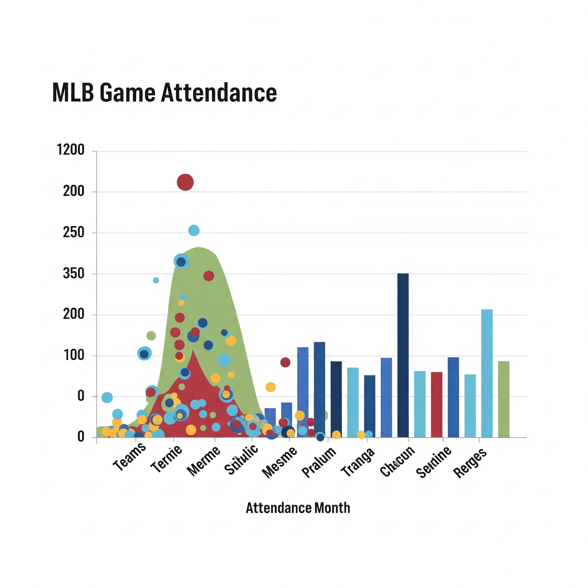

MLB Analysis
Problem Statement
Identify opportunities to look for increasing MLB game attendance on stadiums based on factors like weather, teams played etc.,
Data Used
The dataset for this project is based on a dodgers stadium from 2022. Key features included:
- Attendance
- Temperature
- Sky Condition
- Promotional Activities like bobblehead, cap, shirt, fireworks
Methodology
The project followed the following steps:
-
Data Cleaning & Preprocessing:
- Check for missing values.
- Perform summary statistics
-
Exploratory Data Analysis (EDA):
- Visualized distribution of attendance
- Boxplot to check attendance by Day of Week and by the month as well.
- Scatterplot of Attendance over Temperature and hue by opponents
- Box plot to check for promo activities
-
Correlation Matrix:
- Bobble head has high correlation followed by Top Opponents.
- Temperature and day has a slightly weak positive correlation
- Day Night games have slightly weak negative correlation
-
Model Selection, Training & Evaluation:
- Evaluated Logistic Regression
- Performed 10 fold cross validation.
Results & Insights
The Following features can lead to better attendance:
- Bobblehead giveaway
- Playing against Top opponents
- Playing night games
Tools & Technologies
- Languages: Python
- Libraries: Pandas, NumPy, Scikit-learn, KMeans, Matplotlib, Seaborn, Linear Regression, Cross validation
- Development Environment: Jupyter Notebooks
- Version Control: Git, GitHub